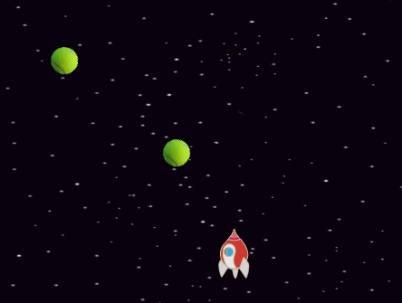

Scratch-idéer
Några enkla Scratch-program som man kan skriva och
ändra tillsammans
Anders Lindahl 2014-05-04
Du får kopiera, sprida och ändra det här dokumentet enligt CC BY-SA 4.0.
Hitta i Scratch
Så här ser Scratch-fönstret ut:

I övre vänstra hörnet finns "scenen", där du kommer se resultatet av dina spel.
I mitten ser du en massa blåa pusselbitar som du kan använda för att göra ditt spel.
Till höger syns ytan där man kan pussla ihop block.
Pussla ihop block
Scrach-blocken fungerar som pusselbitar. De flesta av dem pusslar man ihop efter varandra:

En del kontroll-block kan sitta runt block:
Formen på blocken visar hur de kan pusslas ihop. I runda hål kan man pussla in block med rundade hörn:

...och i kantiga hål block med kantiga hörn:

Röra på sig
Det här programmet får katten att röra på sig när du trycker på den gröna flaggan:

Hur kommer katten röra sig?
Kan du få katten att röra sig i andra mönster? En fyrkant, en triangel, en åtta?
Alla blåa block som sitter ihop utförs på en gång i Scratch, det syns alltså ingen skillnad på de här
två blocken när katten rör sig trots att de ser olika ut:
Klicka på katten
Här är ett spel där man ska klicka på katten som rör sig. Varje gång man träffar jamar katten:

Här är några idéer på hur man kan ändra programmet:
- Räkna poäng varje gång man träffar
- Ge minuspoäng om man missar (dvs om man klickar på bakgrunden)
- Låt katten säga ”Grattis!” när du når tio poäng
- Få katten att röra sig snabbare när man har mer poäng
- Få katten att studsa snett, inte bara fram och tillbaka
Spela toner
Med Scratch-blocken under rubriken ”Ljud” kan man lätt göra ett program för att spela musik. Det här programmet kopplar knappar på tangentbordet till olika toner.

Här är några idéer på hur man kan göra med programmet:
- Kan du spela ”Blinka lilla stjärna” med tangenterna
- Prova att byta instrument
- Prova att lägga flera ”Spela tonen”-block efter varandra för att pussla ihop en melodi
- Prova att låta Scratch spela en slumpad ton (slumptal hittar du under rubriken ”Operatorer”)
- Gör ett spel där man får höra en slumpad ton och ska spela samma ton med tangentbordet
Video
Om din dator har en kamera så kan du leka med den i Scratch. Scratch kan känna av rörelse framför kameran.
Programmet nedan slår på kameran och katten jamar om det rör sig tillräckligt mycket:

Här är några idéer på hur man kan ändra programmet:
- Kan du få katten att röra sig när du viftar framför kameran?
- Få katten att röra sig av sig själv, ge poäng när du lyckas vifta under den.
- Lägg till ytterligare en sprite som rör sig av sig själv, och låt den ge minuspoäng om den känner rörelser.
Ett rymdspel
Såhär kan man göra ett spel där saker flyger mot spelaren. I mitt exempel har jag valt en rymdraket som spelare, men du kan välja vilken du vill.

Först spelarens program:

Välj sedan en ny sprite för det som ska flyga mot spelaren – t.ex. tennisbollar. Här används ”kloner” för att skapa flera kopior av samma sprite.

Programmet till vänster ser till att det dyker upp en ny klon var femte sekund. Programmet till höger styr vad den klonen ska göra.
- Bestäm vad som ska ge poäng. Att träffa en klon eller att missa/hålla sig undan från en klon?
- Kan du göra klonerna snabbare?
- Klonerna siktar på spelaren när de är längst upp på skärmen. Kan du få dem att sikta fler gånger?
Knuffa på saker
Detta är en enkel början till ett spel där en katt knuffar på en fotboll.
Vi börjar med katten. Den behöver bara kunna styras på något sätt:
Fotbollen som ska flytta sig när den blir knuffad behöver kunna lite mer:
Här är några idéer på hur man kan ändra programmet:
- Lägg till ett mål att knuffa bollen till
- Få bollen att rulla en liten bit när den blivit knuffad istället för att bara hoppa 30 steg
- Få bollen att rulla lite hela tiden, så att katten bara kan ändra riktningen